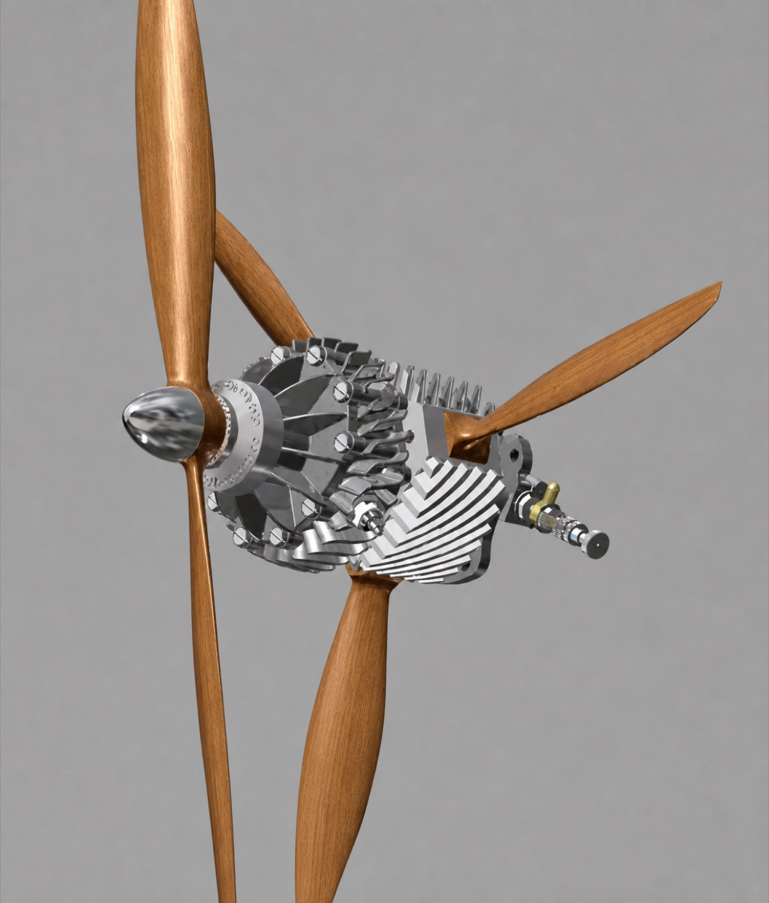
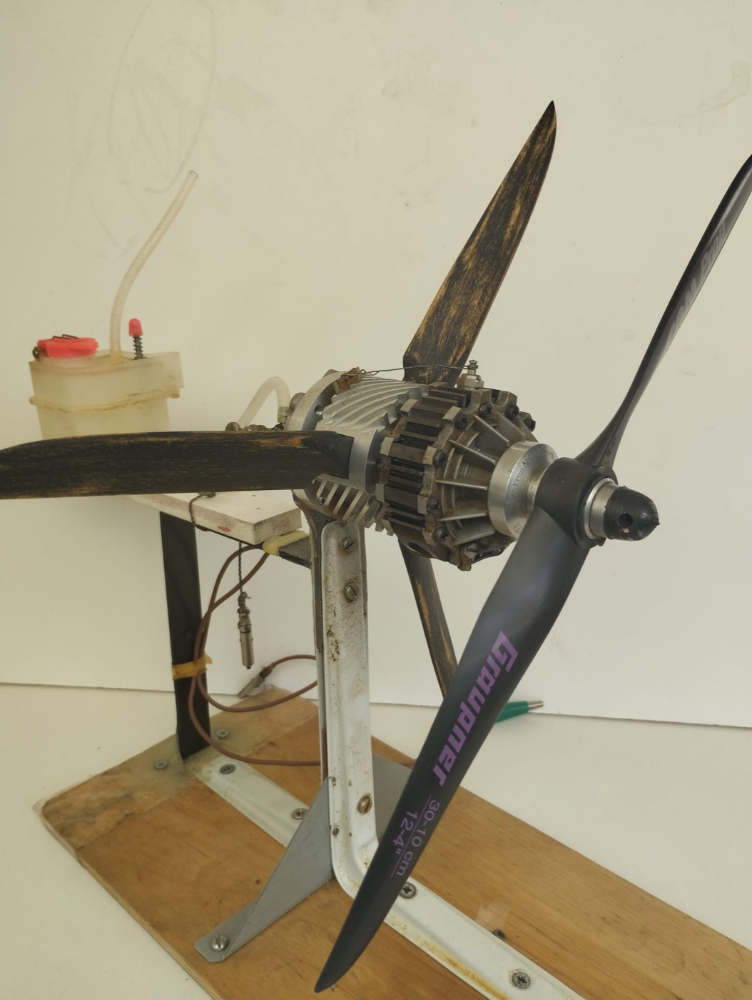

Zwei gegenläufige Propeller auf einer Achse – angetrieben von Motorwelle und rotierendem Motorgehäuse, ganz ohne Untersetzungsgetriebe.
Koaxiale Propellerantriebseinheit
ohne Getriebe – auf Basis eines Wankel-Flugmotors

CAD-Visualisierung der Antriebseinheit mit zwei gegenläufigen Propellern

Funktionsmodell auf dem Prüfstand: vorderer Propeller an der Motorwelle, hinterer Propeller am Motorgehäuse
Allgemeine Charakteristik des koaxialen Systems
Eine koaxiale Propellerantriebseinheit besteht aus zwei auf einer gemeinsamen Achse angeordneten Propellern, die sich in entgegengesetzte Richtungen drehen.
Vorteile
- kompakte Bauweise;
- hohe Schubeffizienz bei begrenztem Propellerdurchmesser;
- Nutzung der Drallenergie des vom vorderen Propeller erzeugten Luftstroms durch den hinteren Propeller;
- Kompensation des Reaktionsmoments und der gyroskopischen Momente.
Nachteile klassischer Systeme
- erhöhter konstruktiver Aufwand;
- hohe Anforderungen an die dynamische Auswuchtung;
- aerodynamische Wechselwirkung der beiden Propeller;
- zusätzliche Vibrationen und Geräusche.
Das vorliegende Projekt verfolgt das Ziel, ein koaxiales Propellersystem zu entwickeln, bei dem die gegenläufige Rotation der beiden Propeller ohne herkömmliches Untersetzungs- bzw. Getriebe realisiert wird.
Konzept der Antriebseinheit
Die Antriebseinheit basiert auf einem Wankel-Flugmotor.
Der vordere Propeller ist direkt mit der Exzenterwelle bzw. Abtriebswelle des Motors verbunden und wird von dieser angetrieben.
Der hintere Propeller ist mit dem Motorgehäuse verbunden. Das Motorgehäuse ist drehbar um eine Achse gelagert, die mit der Achse der Motorwelle fluchtet, und rotiert in entgegengesetzter Richtung zur Motorwelle.
Damit ergibt sich folgende kinematische Zuordnung:
- Motorwelle
- vorderer Propeller
- rotierendes Motorgehäuse
- hinterer Propeller
Ein Getriebe zur Erzeugung der gegenläufigen Rotation ist nicht erforderlich.
Der Vergaser sowie die für Kraftstoffversorgung und Motorsteuerung erforderlichen Komponenten bleiben gegenüber der Flugzeugstruktur stationär.
OS Wankel Koaxial Rotary Engine (Umlaufmotor) CAD
Umbau und CAD-Explosion eines Wankelmotors zu einem Koaxial-Umlaufmotor.
Differenzielles Funktionsprinzip
Eine wesentliche Besonderheit des Konzepts besteht darin, dass Motor und beide Propeller zusammen ein differenzielles mechanisches System bilden.
Die aerodynamischen Widerstandsmomente des vorderen und hinteren Propellers wirken jeweils auf die Motorwelle bzw. auf das rotierende Motorgehäuse. Das Verhältnis dieser Momente bestimmt die Verteilung der Drehzahlen zwischen den beiden rotierenden Systemen.
Im Gegensatz zu einem konventionellen Getriebe existiert somit kein fest vorgegebenes Übersetzungsverhältnis zwischen den beiden Propellern. Die Drehzahlen stellen sich dynamisch entsprechend der jeweiligen aerodynamischen Belastung der beiden Propeller ein.
Im stationären Betriebszustand strebt das System einen Momentenausgleich an:
M₁ + M₂ ≈ 0
Dadurch kann das auf die Flugzeugstruktur übertragene Reaktionsmoment wesentlich reduziert bzw. bei optimalem Momentenausgleich nahezu vollständig kompensiert werden.
Kompensation der gyroskopischen Momente
Die gegenläufige Rotation der beiden Propeller reduziert den resultierenden Drall bzw. Drehimpuls des Gesamtsystems:
HΣ = H₁ + H₂ ≈ 0
Bei annähernd gleichen Beträgen der Drehimpulse beider Propeller wird die gyroskopische Wirkung der Antriebseinheit auf das Luftfahrzeug deutlich reduziert.
Unterschiedliche Anzahl der Propellerblätter
Vorgesehen ist die Verwendung von Propellern mit unterschiedlicher Blattzahl, beispielsweise:
Kombination 2 / 3
vorderer Propeller: 2 Blätter,
hinterer Propeller: 3 Blätter
Kombination 3 / 4
vorderer Propeller: 3 Blätter,
hinterer Propeller: 4 Blätter
Bei gleicher Blattzahl weist die Interaktion der beiden Propeller eine ausgeprägtere periodische Struktur auf. Eine unterschiedliche Blattzahl verändert dieses Interaktionsmuster: Der von einem Blatt des vorderen Propellers erzeugte Nachlauf trifft nacheinander auf unterschiedliche Blätter des hinteren Propellers und nicht bei jedem Umlauf auf dieselben Blattpositionen.
Dadurch kann das Auftreten periodischer Lastimpulse, von Vibrationen und tonalen Geräuschanteilen reduziert werden.
Die optimale Kombination der Blattzahlen ist durch aerodynamische Berechnungen und experimentelle Untersuchungen zu bestimmen.
Wesentliche Vorteile des vorgeschlagenen Konzepts
- gegenläufige Rotation zweier koaxialer Propeller ohne Getriebe;
- Kompensation des Reaktionsmoments;
- Reduzierung der gyroskopischen Momente;
- differenzielle Verteilung der Drehzahlen entsprechend der aerodynamischen Belastung;
- kompakte Bauweise;
- Möglichkeit einer getrennten Optimierung von Vorder- und Hinterpropeller hinsichtlich der Blattzahl;
- potenzielle Reduzierung von Geräuschen und Vibrationen;
- effektive Nutzung der Drallenergie des vom vorderen Propeller erzeugten Nachlaufs.
Wesentliche Entwicklungsaufgaben
Zur technischen Validierung des Konzepts sind insbesondere folgende Untersuchungen erforderlich:
- Festigkeitsnachweis und dynamische Auswuchtung des rotierenden Motorgehäuses;
- Untersuchung der Leistungsverteilung zwischen den beiden Propellern;
- Untersuchung der Stabilität des differentiellen Betriebszustands;
- Bestimmung des Drehzahlbereichs und des Drehzahlverhältnisses;
- Optimierung des axialen Abstands zwischen den Propellern;
- Untersuchung verschiedener Blattzahlkombinationen;
- Untersuchung von Schwingungen und akustischen Eigenschaften;
- Ermittlung von Schub, Wirkungsgrad und mechanischen Verlusten.
Zusammenfassung
Das vorgeschlagene Konzept stellt eine getriebelose koaxiale Propellerantriebseinheit mit gegenläufiger Rotation von Motorwelle und Motorgehäuse dar.
Das wesentliche Unterscheidungsmerkmal gegenüber konventionellen koaxialen Antriebssystemen besteht darin, dass der hintere Propeller direkt durch das rotierende Motorgehäuse angetrieben wird. Die Verteilung der Drehzahlen zwischen den beiden Propellern entsteht dabei dynamisch aus der aerodynamischen Belastung und dem Momentengleichgewicht des Gesamtsystems.
Damit werden die Funktionen von Antriebsmotor und Differenzialmechanismus in einem gemeinsamen rotierenden System zusammengeführt. Das Konzept ist insbesondere für kompakte Luftfahrzeugantriebe interessant, bei denen eine Kompensation des Reaktionsmoments und eine Reduzierung der gyroskopischen Wirkung ohne ein konventionelles Getriebe angestrebt werden.